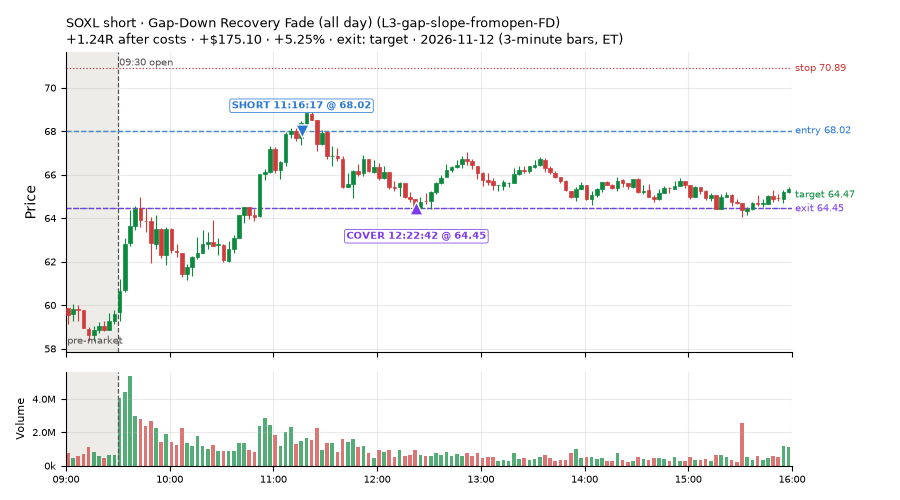
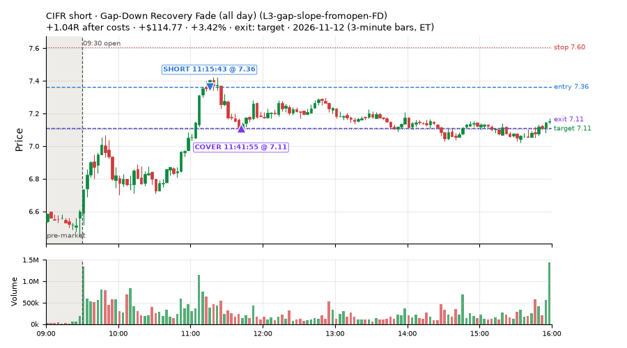
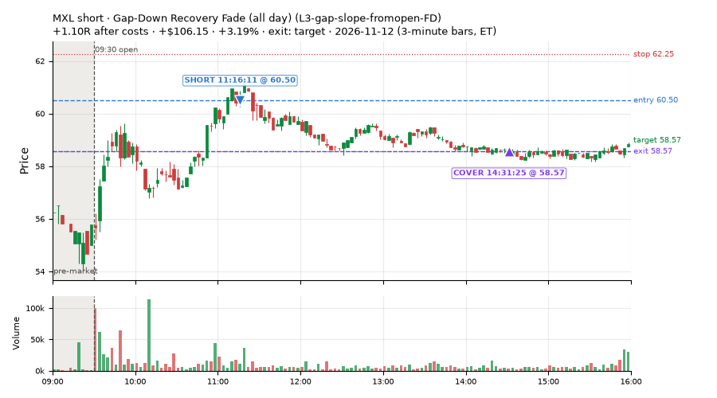
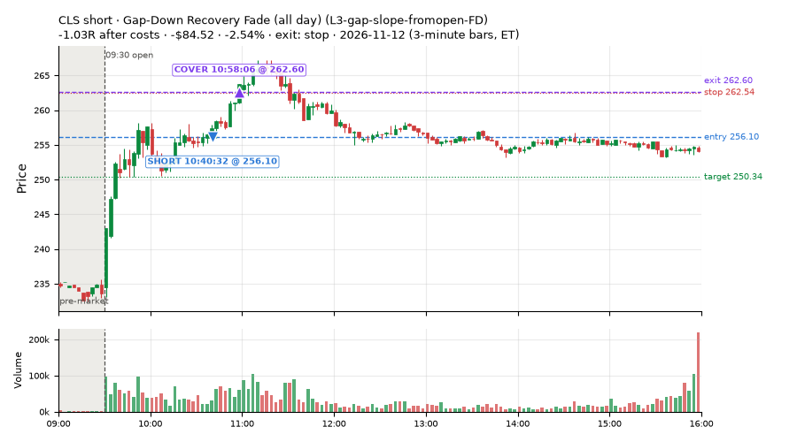
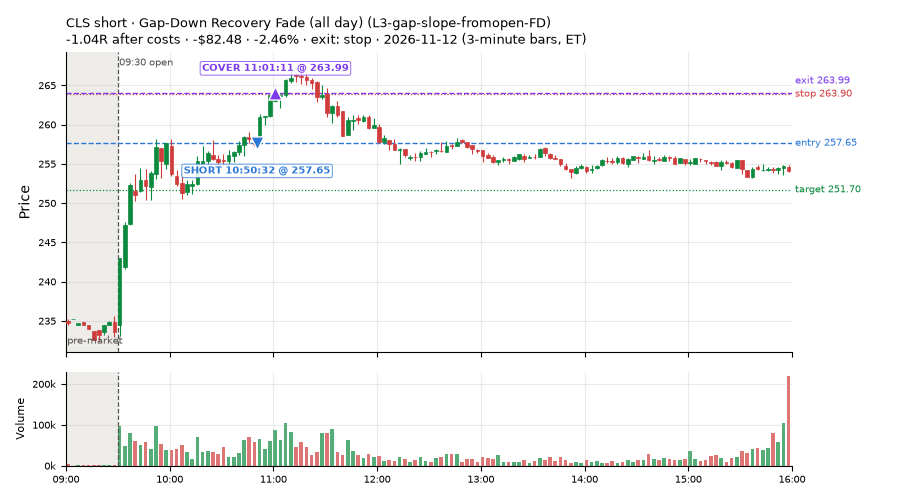
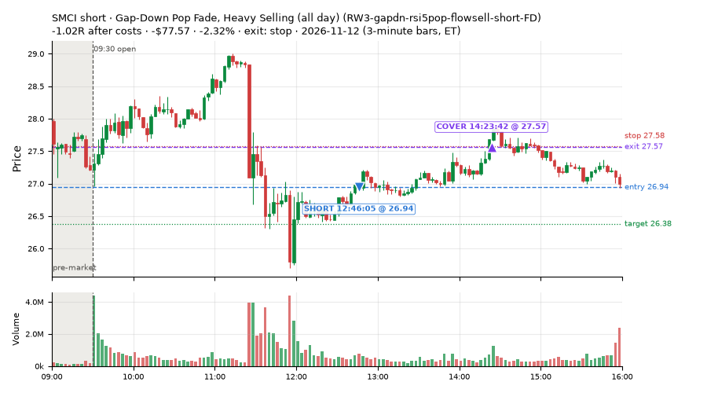
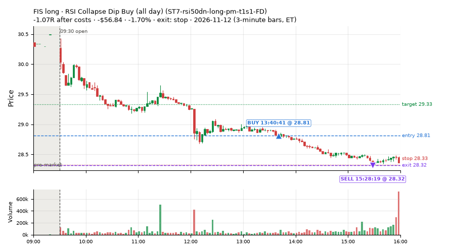
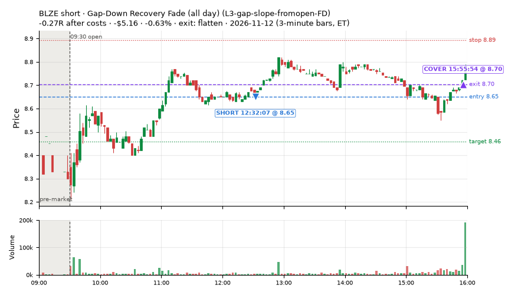

75 trades · win rate 89% · P/L $2,843.11
PROBATION: no live setup has passed both locked test periods. 10 owner-directed setups added 2026-10-08 (MarcoFlow top 5 + 5 new), untested live. RW6G1 (RW6 + VWAP band guard) added 2026-10-09, probation.

| Symbol | Setup | Side | In | Out | Entry | Exit | Exit reason | % gained | P/L |
|---|---|---|---|---|---|---|---|---|---|
| SOXL | Gap-Down Recovery Fade (all day) (L3-gap-slope-fromopen-FD) | short | 11:16 | 12:22 | 68.02 | 64.45 | target | +5.25% | $175.10 |
| CIFR | Gap-Down Recovery Fade (all day) (L3-gap-slope-fromopen-FD) | short | 11:15 | 11:41 | 7.36 | 7.11 | target | +3.42% | $114.77 |
| MXL | Gap-Down Recovery Fade (all day) (L3-gap-slope-fromopen-FD) | short | 11:16 | 14:31 | 60.50 | 58.57 | target | +3.19% | $106.15 |
| Symbol | Setup | Side | In | Out | Entry | Exit | Exit reason | % lost | P/L |
|---|---|---|---|---|---|---|---|---|---|
| CLS | L3-gap-slope-fromopen-FD | short | 10:40 | 10:58 | 256.10 | 262.60 | stop | -2.54% | $-84.52 |
| CLS | L3-gap-slope-fromopen-FD | short | 10:50 | 11:01 | 257.65 | 263.99 | stop | -2.46% | $-82.48 |
| SMCI | RW3-gapdn-rsi5pop-flowsell-short-FD | short | 12:46 | 14:23 | 26.94 | 27.57 | stop | -2.32% | $-77.57 |
| FIS | ST7-rsi50dn-long-pm-t1s1-FD | long | 13:40 | 15:28 | 28.81 | 28.32 | stop | -1.70% | $-56.84 |
| BLZE | L3-gap-slope-fromopen-FD | short | 12:32 | 15:55 | 8.65 | 8.70 | flatten | -0.63% | $-5.16 |








Signal to fill: median 2s, 90th percentile 6s (75 trades). Bars close each minute; the order follows the bar close.
Best excursion (MFE): median 0.84R; worst (MAE) median 0.29R. 8% of trades never got +0.25R in our favour; 0 reached +1R and still closed at or below 0.
| Symbol | Setup | Best R | Worst R | Closed R |
|---|---|---|---|---|
| SMCI | RW3-gapdn-rsi5pop-flowsell-short-FD | +0.23 | -1.15 | -1.02 |
| FIS | ST7-rsi50dn-long-pm-t1s1-FD | +0.11 | -1.01 | -1.07 |
| CLS | L3-gap-slope-fromopen-FD | +0.02 | -1.13 | -1.04 |
| CLS | L3-gap-slope-fromopen-FD | +0.02 | -1.14 | -1.03 |
| BLZE | L3-gap-slope-fromopen-FD | +0.41 | -0.70 | -0.27 |
| Entry time | Trades | Win | Avg R | P/L |
|---|---|---|---|---|
| 09:50-10:30 | 1 | 100% | +0.68 | $70.35 |
| 10:30-11:30 | 45 | 93% | +0.69 | $2,258.20 |
| 11:30-13:00 | 23 | 83% | +0.31 | $437.78 |
| 13:00-14:00 | 2 | 50% | -0.07 | $18.99 |
| 14:00-16:00 | 4 | 100% | +0.26 | $57.79 |
| Setup | Trades | Win | Avg R after costs | Adj R (net of SPY) | Avg R ex-market (all sessions) | P/L |
|---|---|---|---|---|---|---|
| Gap-Down Recovery Fade (all day) (L3-gap-slope-fromopen-FD) | 52.0 | 92% | +0.60 | +0.43 | +0.02 (beta -1.21, n 118) | $2,548.37 |
| Late-Day ETF Dip Buy (near-miss) (NM-ETF-late-dip-di-long) | 1.0 | 100% | +0.21 | +0.28 | – | $39.42 |
| Big Loser Flush Buy (NS5-sma50-flush-oversold-long) owner-directed; holdouts once: Sep-Oct -0.008R n73, Apr-Jun +0.002R n231 | 2.0 | 50% | +0.13 | +0.43 | +0.10 (beta +0.65, n 35) | $90.39 |
| Gap-Down Pop Fade, Heavy Selling (all day) (RW3-gapdn-rsi5pop-flowsell-short-FD) | 12.0 | 92% | +0.47 | -0.39 | +0.03 (beta -1.10, n 128) | $133.98 |
| Gap-Down Pop Fade (all day) (RW5-heat30-flowsell-rsi5pop-gapdn-short-FD) | 7.0 | 86% | +0.56 | -0.27 | -0.00 (beta -0.98, n 150) | $87.79 |
| RSI Collapse Dip Buy (all day) (ST7-rsi50dn-long-pm-t1s1-FD) | 1.0 | 0% | -1.07 | -0.86 | +0.20 (beta +0.35, n 23) | $-56.84 |
Market direction (SPY, beta 1) accounted for $903.90 of today's $2,843.11; the rest ($1,939.21) came from the setups themselves. Avg R net of SPY: +0.21 (incl. a hedge leg's cost; report only).
6 setups live today. Today: 1326 signals, 75 taken, 0 lost because another setup held the symbol (0%). Since 2026-10-06 (28 sessions): 5066 signals, 1222 taken, 172 lost to other setups (3%). Peak open positions today 49 of 77 slots. Earnings blackout removed 576 symbols before scanning.
Simulated playing time (not live): 3819 what-if trades of signals not taken, avg +0.12R, 63% winners; of them 172 lost to another setup (avg -0.18R).
Silent: intraday_momentum · Crowded out: MF4-h40-open-flowsell, MF3-open-flowsell-rsi5hi, MF5-flowsell-vwapup-rsi5hi · Starved: MF2-open-rsimidhi-flowsell
| Prio | Setup | Today sig / taken | Sessions | Signals / taken / trades | Taken/day | Expected/day | Lost to other setups | Lost to (setup n) | Top skip reasons | SIMULATED: not-taken n / avg R / win | Verdict |
|---|---|---|---|---|---|---|---|---|---|---|---|
| 1 | Late-Day ETF Dip Buy (near-miss) NM-ETF-late-dip-di-long | 1 / 1 | 2 | 1 / 1 / 1 | 0.50 | – | 0 | – | – | 0 / – | slow 2.5 entries/week; ~24 weeks to 60 trades |
| 2 | Gap-Down Pop Fade (all day) RW5-heat30-flowsell-rsi5pop-gapdn-short-FD | 10 / 7 | 20 | 215 / 150 / 150 | 7.50 | 12.79 | 0 | – | spread / quote / size 24, daily loss cap 21, not shortable / shorts off 20 | 65 / -0.08R / 43% | ok 37.5 entries/week |
| 3 | Gap-Down Pop Fade, Heavy Selling (all day) RW3-gapdn-rsi5pop-flowsell-short-FD | 14 / 12 | 20 | 221 / 128 / 128 | 6.40 | 13.59 | 1 | CWT14-failbrk-pdl-p10-lowvol-long 1 | daily loss cap 33, not shortable / shorts off 32, spread / quote / size 27 | 93 / +0.13R / 57% | ok 32.0 entries/week |
| 4 | RSI Collapse Dip Buy (all day) ST7-rsi50dn-long-pm-t1s1-FD | 3 / 1 | 14 | 46 / 23 / 23 | 1.64 | 2.17 | 0 | – | spread / quote / size 21, daily loss cap 2 | 23 / +0.25R / 61% | slow 8.2 entries/week; ~7 weeks to 60 trades |
| 5 | Gap-Down Recovery Fade (all day) L3-gap-slope-fromopen-FD | 1295 / 52 | 12 | 2683 / 118 / 118 | 9.83 | – | 33 | L3-gap-slope-fromopen-FD 33, L3-gap-slope-rsi5hi-FD 14 | not shortable / shorts off 1701, per-setup cap 648, daily loss cap 106 | 2560 / +0.20R / 66% | ok 49.2 entries/week |
| 6 | Big Loser Flush Buy NS5-sma50-flush-oversold-long | 3 / 2 | 26 | 53 / 35 / 35 | 1.35 | 2.41 | 0 | – | daily loss cap 13, spread / quote / size 5 | 18 / +0.07R / 56% | slow 6.7 entries/week; ~9 weeks to 60 trades |
Every trade is attached as a CSV you can open and edit in Excel or Google Sheets. Live page: https://misiti15.github.io/MCF/live/